稚内～小樽
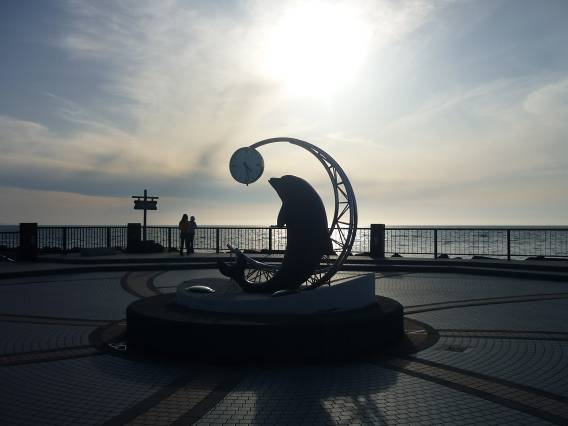
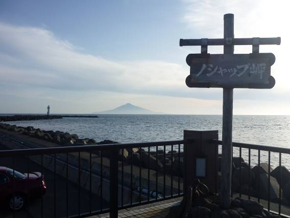
ノシャップ岬へも足を伸ばしてみた。こちらは少し人が少ない。沖には憧れの利尻富士が。この山の頂に上れば360度の眼下に海が見下ろせるはずだ。火山が丸ごと島になっている。
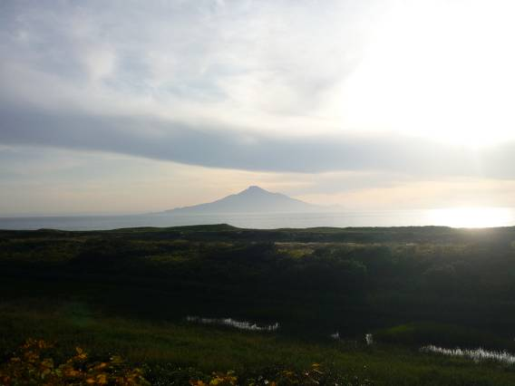
広大なサロベツ原野と利尻島。
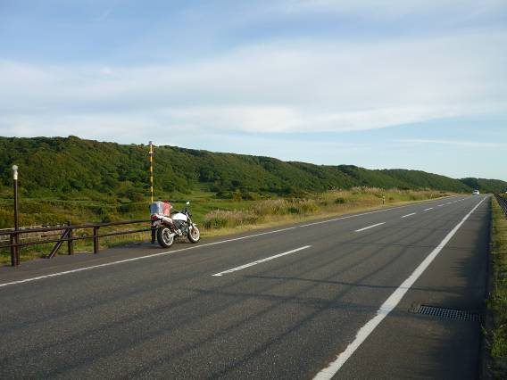
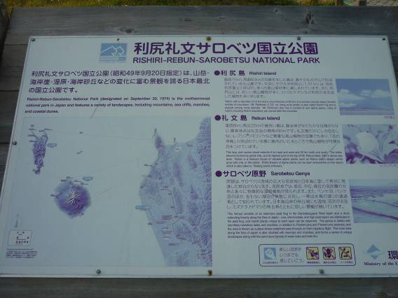
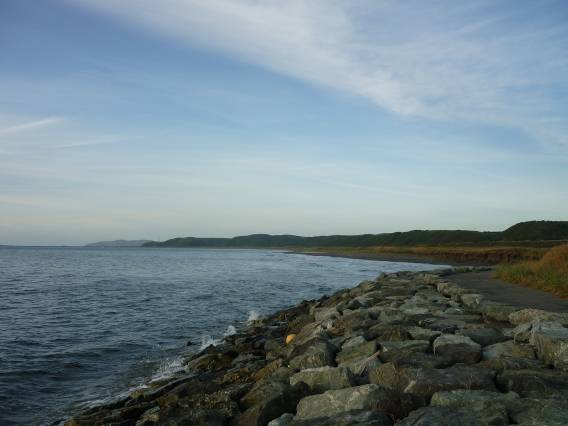
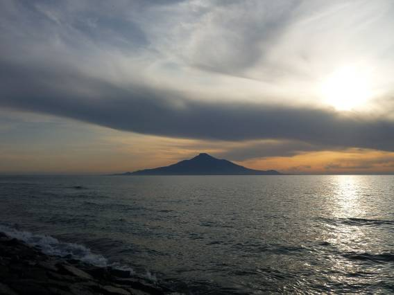
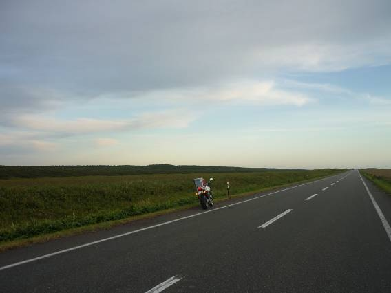
夕日に暮れなずむサロベツ原野と利尻島。この景色を語るのに、言葉は要らない。知床峠、ベニヤ原生花園とならんで感動の大きかった場所のひとつ。
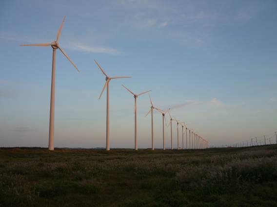
原野にならぶ風力発電風車群。遠近感がいい感じだ。
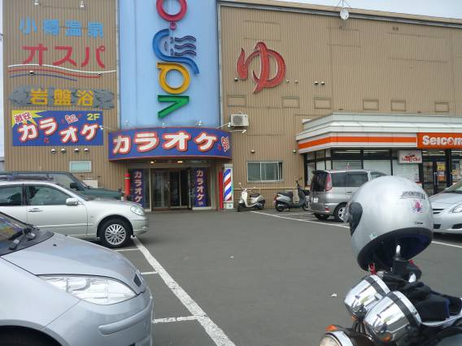
留萌などは豪雨のため写真撮れず。なんとか小樽にたどり着き、温泉へ直行♪
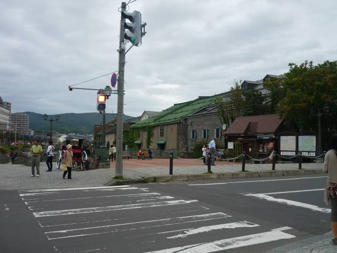
小樽の街はレトロな倉庫が立ち並ぶ。
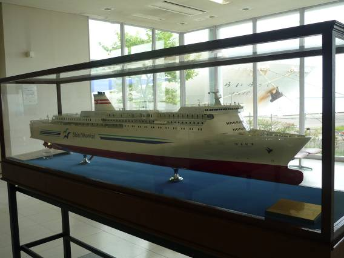
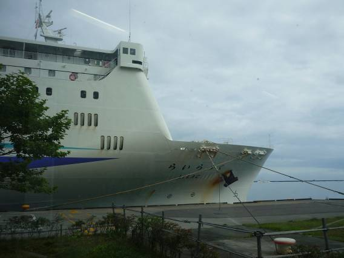
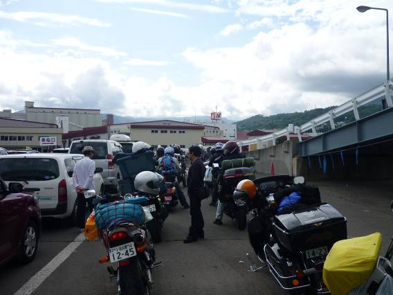
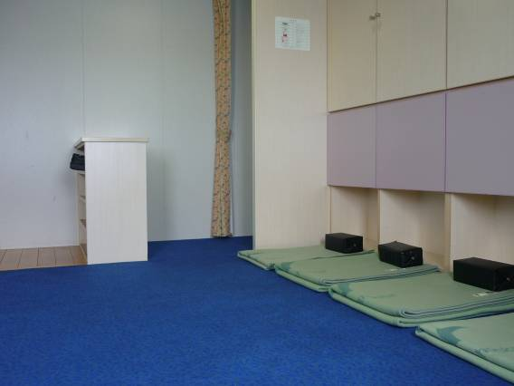
新日本海フェリーに乗船。
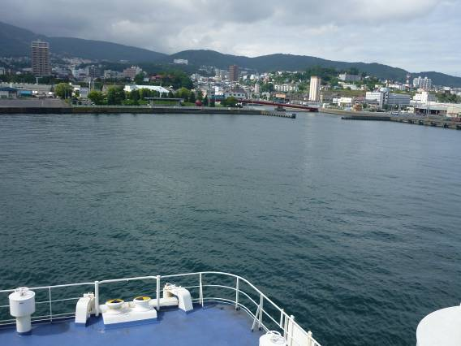
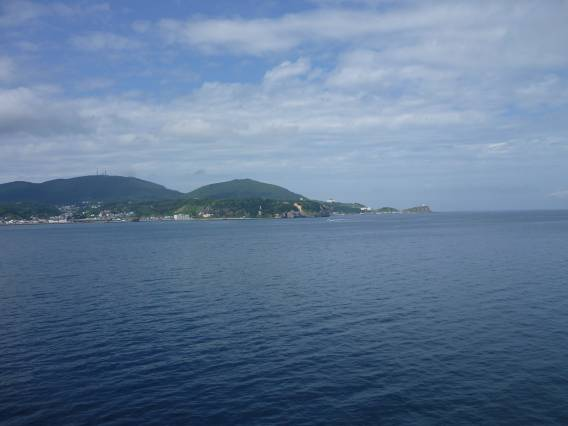
小樽港を出港。北海道に別れを告げる。名残惜しいが、名古屋がすごく恋しい。
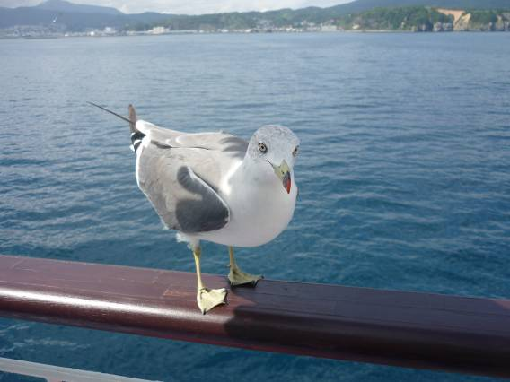
カモメがついてくる。食べ物を狙っているようだ。目つきがすごく嫌らしかった。手に持っているパンでも持っていってしまうのだ。